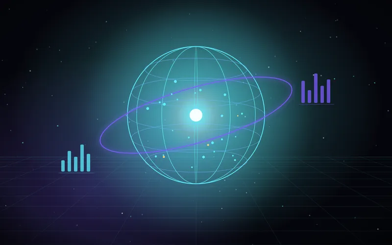
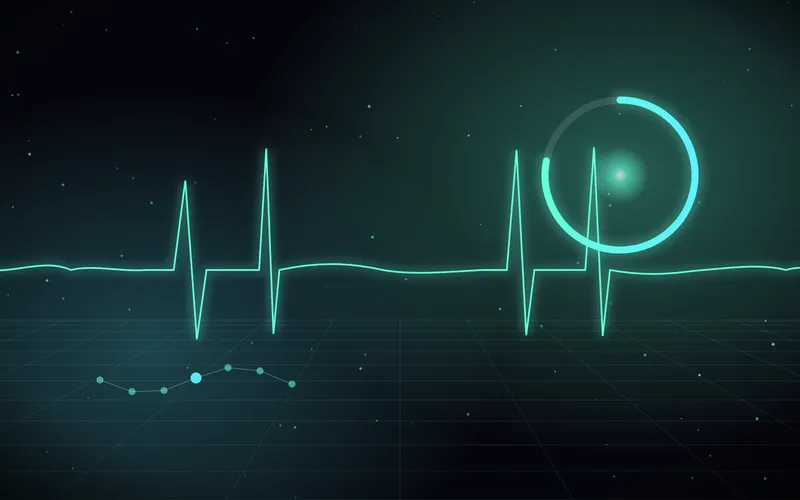
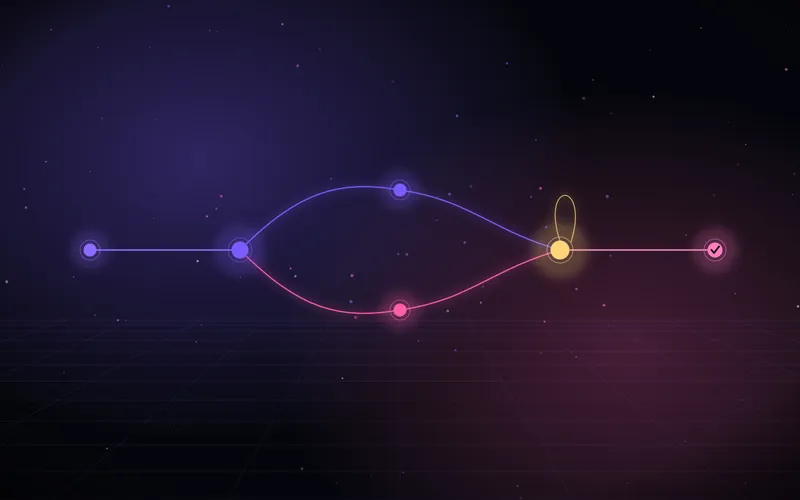
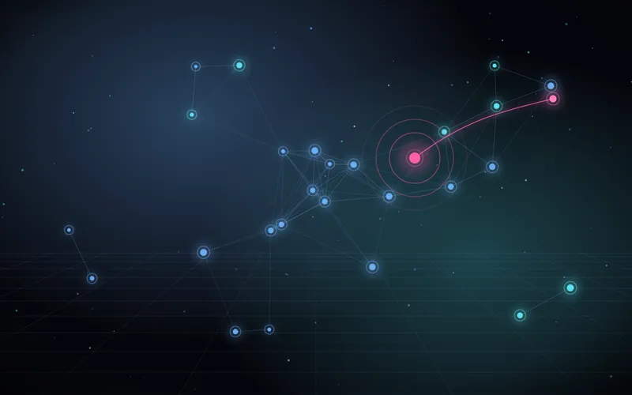
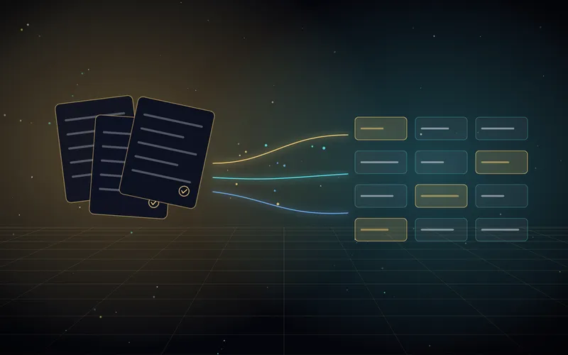
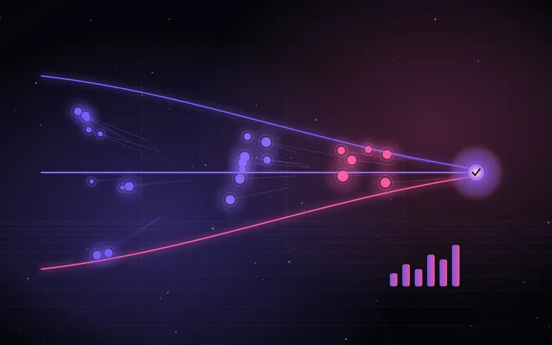

Eine Plattform, viele
digitale Gesichter.
Das hier sind echte, klickbare Mini-Apps, die ich gebaut habe. Schau dich um wie im Kino — und klick die Demo in der Mitte an.

ATLAS Produktions-Cockpit
Ein sprechender KI-Assistent im „Jarvis"-Stil brieft dich morgens: überfällige Aufträge, Engpässe und To-dos auf einen Blick.
Live-Demo öffnen ↗
APEX Garmin-KI-Coach
Liest deine Garmin-Werte (Trainingsbereitschaft, HRV, Schlaf, VO₂max) und baut daraus ein tagesaktuelles, auf dein Ziel abgestimmtes Training.
Live-Demo öffnen ↗
KI-Agenten-Workflow
Eine Kundenanfrage wird automatisch eingeordnet, beantwortet und geprüft — mit echtem Revisions-Loop und menschlicher Freigabe.
Live-Demo öffnen ↗
FlowOps IoT-Monitoring
Live-Überwachung von Maschinen- und Sensordaten mit Schwellwert-Alarmen und automatischer Eskalation.
Live-Demo öffnen ↗
DocFlow Dokumenten-Automatisierung
Eingehende PDFs werden von einem Sprachmodell gelesen, geprüft und revisionssicher archiviert.
Live-Demo öffnen ↗
PulseCRM Vertriebs-Cockpit
Leads, Angebote und Umsätze in einer Pipeline — KI fasst die Historie zusammen und schlägt den nächsten Schritt vor.
Live-Demo öffnen ↗Mit den Pfeilen (oder Pfeiltasten) umsehen — Klick auf die Karte in der Mitte öffnet die Demo.
Idee, die ich mal durchspielen soll?
Wenn du etwas Ähnliches im Kopf hast oder einfach wissen willst, ob sich was automatisieren lässt — schreib mir, ich bastel gern.
Schreib mir →